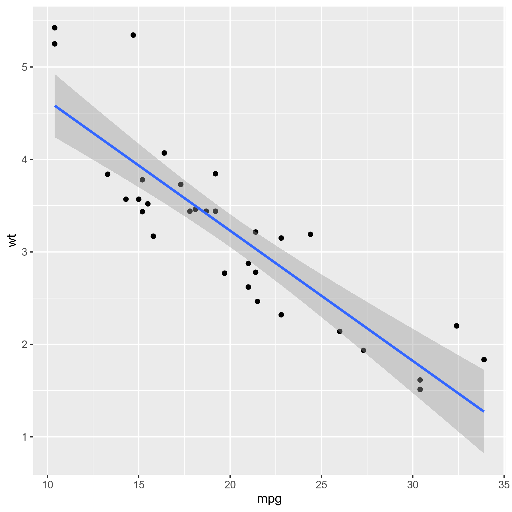

Data was collected as part of preliminary method development and testing for single-nuclei RNA-sequencing from mouse livers of 2,3,7,8-tetrachlorodibenzo-p-dioxin (TCDD) treated mice. For experimental and model details see our preprint on bioRxiv. A total of 4 samples (2 vehicle, 2 TCDD) were examined by snRNA-seq. Samples were run in two batches (Day 1 - VEH64; Day 2 - VEH62, TCDD51, TCDD59).
For more details please see our publication
Raw sequencing data and final Seurat object are deposited in GEO herelibrary(Seurat, quietly = TRUE) #Single-nuclei analysis tools
library(scater, quietly = TRUE) #QC
library(DoubletFinder, quietly = TRUE) #Doublet detection
library(mvoutlier, quietly = TRUE) #Dependency
library(pheatmap, quietly = TRUE) #Draw heatmaps
library(mclust, quietly = TRUE) #Draw heatmaps
library(slingshot, quietly = TRUE) #Trajectory analysis
library(gam, quietly = TRUE) #Dependency
library(DESeq2, quietly = TRUE) #Pseudobulk analysissessionInfo()## R version 3.6.0 beta (2019-04-14 r76394)
## Platform: x86_64-pc-linux-gnu (64-bit)
## Running under: CentOS Linux 7 (Core)
##
## Matrix products: default
## BLAS/LAPACK: /opt/software/OpenBLAS/0.3.1-GCC-7.3.0-2.30/lib/libopenblas_sandybridgep-r0.3.1.so
##
## locale:
## [1] LC_CTYPE=en_US.UTF-8 LC_NUMERIC=C
## [3] LC_TIME=en_US.UTF-8 LC_COLLATE=en_US.UTF-8
## [5] LC_MONETARY=en_US.UTF-8 LC_MESSAGES=en_US.UTF-8
## [7] LC_PAPER=en_US.UTF-8 LC_NAME=C
## [9] LC_ADDRESS=C LC_TELEPHONE=C
## [11] LC_MEASUREMENT=en_US.UTF-8 LC_IDENTIFICATION=C
##
## attached base packages:
## [1] splines parallel stats4 stats graphics grDevices utils
## [8] datasets methods base
##
## other attached packages:
## [1] DESeq2_1.24.0 gam_1.16.1
## [3] foreach_1.4.7 slingshot_1.2.0
## [5] princurve_2.1.4 mclust_5.4.5
## [7] pheatmap_1.0.12 mvoutlier_2.0.9
## [9] sgeostat_1.0-27 DoubletFinder_2.0.2
## [11] scater_1.12.2 ggplot2_3.2.1
## [13] SingleCellExperiment_1.6.0 SummarizedExperiment_1.14.1
## [15] DelayedArray_0.10.0 BiocParallel_1.18.1
## [17] matrixStats_0.55.0 Biobase_2.44.0
## [19] GenomicRanges_1.36.1 GenomeInfoDb_1.20.0
## [21] IRanges_2.18.3 S4Vectors_0.22.1
## [23] BiocGenerics_0.30.0 Seurat_3.1.2
## [25] reshape2_1.4.3 dplyr_0.8.4
## [27] cowplot_1.0.0 RColorBrewer_1.1-2
## [29] Cairo_1.5-10 knitr_1.27
##
## loaded via a namespace (and not attached):
## [1] rgl_0.100.30 rsvd_1.0.2 vcd_1.4-5
## [4] Hmisc_4.3-0 ica_1.0-2 zinbwave_1.6.0
## [7] class_7.3-15 lmtest_0.9-37 glmnet_3.0-2
## [10] crayon_1.3.4 laeken_0.5.0 MASS_7.3-51.4
## [13] backports_1.1.4 nlme_3.1-139 rlang_0.4.4
## [16] XVector_0.24.0 ROCR_1.0-7 readxl_1.3.1
## [19] irlba_2.3.3 limma_3.40.6 phylobase_0.8.6
## [22] manipulateWidget_0.10.0 bit64_0.9-7 glue_1.3.1
## [25] rngtools_1.5 sctransform_0.2.1 vipor_0.4.5
## [28] AnnotationDbi_1.46.1 haven_2.2.0 tidyselect_0.2.5
## [31] NADA_1.6-1 rio_0.5.16 fitdistrplus_1.0-14
## [34] XML_3.99-0.3 tidyr_1.0.2 zoo_1.8-7
## [37] xtable_1.8-3 magrittr_1.5 evaluate_0.14
## [40] bibtex_0.4.2.2 Rdpack_0.11-1 zlibbioc_1.30.0
## [43] sn_1.5-4 rstudioapi_0.10 miniUI_0.1.1.1
## [46] sp_1.3-2 robCompositions_2.1.0 rpart_4.1-15
## [49] pls_2.7-2 zCompositions_1.3.3-1 locfdr_1.1-8
## [52] shiny_1.3.1 BiocSingular_1.0.0 xfun_0.12
## [55] multtest_2.42.0 cluster_2.1.0 caTools_1.18.0
## [58] tibble_2.1.1 ggrepel_0.8.1 ape_5.3
## [61] listenv_0.8.0 stabledist_0.7-1 png_0.1-7
## [64] reshape_0.8.8 future_1.16.0 withr_2.1.2
## [67] bitops_1.0-6 ranger_0.12.1 plyr_1.8.4
## [70] cellranger_1.1.0 pcaPP_1.9-73 e1071_1.7-3
## [73] pillar_1.4.3 RcppParallel_4.4.4 gplots_3.0.1.2
## [76] multcomp_1.4-11 flexmix_2.3-15 kernlab_0.9-29
## [79] DelayedMatrixStats_1.6.1 vctrs_0.2.2 NMF_0.21.0
## [82] metap_1.3 tools_3.6.0 foreign_0.8-75
## [85] rncl_0.8.3 beeswarm_0.2.3 munsell_0.5.0
## [88] compiler_3.6.0 abind_1.4-5 httpuv_1.5.1
## [91] pkgmaker_0.31 plotly_4.9.1 GenomeInfoDbData_1.2.1
## [94] gridExtra_2.3 edgeR_3.26.8 lattice_0.20-38
## [97] mutoss_0.1-12 later_0.8.0 jsonlite_1.6
## [100] GGally_1.4.0 scales_1.0.0 pbapply_1.4-2
## [103] carData_3.0-3 genefilter_1.66.0 lazyeval_0.2.2
## [106] promises_1.0.1 car_3.0-6 doParallel_1.0.15
## [109] latticeExtra_0.6-29 R.utils_2.9.2 checkmate_1.9.4
## [112] reticulate_1.14 rmarkdown_1.14 openxlsx_4.1.4
## [115] sandwich_2.5-1 webshot_0.5.2 Rtsne_0.15
## [118] forcats_0.4.0 copula_0.999-19.1 softImpute_1.4
## [121] uwot_0.1.5 igraph_1.2.4.2 HDF5Array_1.12.3
## [124] survival_3.1-8 numDeriv_2016.8-1.1 yaml_2.2.0
## [127] plotrix_3.7-7 prabclus_2.3-2 htmltools_0.3.6
## [130] memoise_1.1.0 modeltools_0.2-22 locfit_1.5-9.1
## [133] viridisLite_0.3.0 digest_0.6.23 rrcov_1.5-2
## [136] assertthat_0.2.1 mime_0.8 rappdirs_0.3.1
## [139] registry_0.5-1 npsurv_0.4-0 RSQLite_2.2.0
## [142] future.apply_1.4.0 lsei_1.2-0 data.table_1.12.8
## [145] blob_1.2.1 R.oo_1.23.0 RNeXML_2.4.2
## [148] Formula_1.2-3 Rhdf5lib_1.6.3 fpc_2.2-4
## [151] RCurl_1.98-1.1 cvTools_0.3.2 hms_0.5.3
## [154] base64enc_0.1-3 rhdf5_2.28.1 colorspace_1.4-1
## [157] mnormt_1.5-5 ggbeeswarm_0.6.0 SDMTools_1.1-221.2
## [160] shape_1.4.4 nnet_7.3-12 Rcpp_1.0.3
## [163] ADGofTest_0.3 RANN_2.6.1 mvtnorm_1.0-10
## [166] pspline_1.0-18 VIM_4.8.0 truncnorm_1.0-8
## [169] R6_2.4.0 grid_3.6.0 acepack_1.4.1
## [172] ggridges_0.5.2 lifecycle_0.1.0 zip_2.0.4
## [175] TFisher_0.2.0 curl_3.3 gdata_2.18.0
## [178] leiden_0.3.2 robustbase_0.93-5 Matrix_1.2-17
## [181] howmany_0.3-1 RcppAnnoy_0.0.14 TH.data_1.0-10
## [184] iterators_1.0.12 stringr_1.4.0 htmlwidgets_1.5.1
## [187] purrr_0.3.2 crosstalk_1.0.0 globals_0.12.5
## [190] htmlTable_1.13.3 clusterExperiment_2.4.4 codetools_0.2-16
## [193] gtools_3.8.1 prettyunits_1.0.2 gridBase_0.4-7
## [196] RSpectra_0.16-0 R.methodsS3_1.7.1 gtable_0.3.0
## [199] tsne_0.1-3 DBI_1.1.0 httr_1.4.1
## [202] KernSmooth_2.23-16 stringi_1.4.3 progress_1.2.2
## [205] uuid_0.1-2 diptest_0.75-7 annotate_1.62.0
## [208] viridis_0.5.1 xml2_1.2.2 boot_1.3-24
## [211] BiocNeighbors_1.2.0 geneplotter_1.62.0 ade4_1.7-13
## [214] sROC_0.1-2 DEoptimR_1.0-8 bit_1.1-15.1
## [217] jpeg_0.1-8.1 pkgconfig_2.0.3 gsl_2.1-6
## [220] gbRd_0.4-11Some random text here.
p <- ggplot(mtcars, aes(mpg, wt)) +
geom_point() +
geom_smooth(method = lm)
ggsave(file = 'p.png', plot = p, height = 6, width = 6)
Back to top